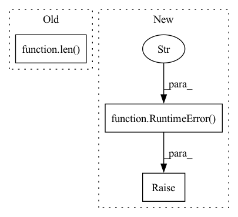

Pattern ID :22811
Before Change
if len(ranks) != len(actors):
raise RuntimeError("Each actor should correspond to one rank. Got "{}" "
"ranks but "{}" actors".format(
len(ranks), len( actors) ))
if set(ranks) != set(range(len(ranks))):
raise RuntimeError(After Change
if set(ranks) != set(range(len(ranks))):
got_ranks = "".join([str(r) for r in ranks])
raise RuntimeError(
f"Ranks must be a permutation from 0 to "{len(ranks)}". "
f"Got "{got_ranks}"." )
if world_size <= 0:
raise RuntimeError("World size must be greater than zero. "
f"Got "{world_size}".")In pattern: SUPERPATTERN
Frequency: 5
Non-data size: 3
Instances Fragment ID: 72413745
Project Name: alpa-projects/alpa
Commit Name: 7a140edbf65db04159da163f40d5cc9ce89afa65
Time: 2022-04-30
Author: zhisbug@users.noreply.github.com
File Name: alpa/collective/collective.py
M Class Name: AnonimousClass
N Class Name: AnonimousClass
M Method Name: create_collective_group(5)
N Method Name: create_collective_group(5)
M Parent Class:
N Parent Class:
M File Name: alpa/collective/collective.py
N File Name: alpa/collective/collective.py
M Start Line: 181
M End Line: 192
N Start Line: 180
N End Line: 191
Before Change
x = set_device(input_data, device)
else:
if dtypes is None:
dtypes = [torch.float] * len( input_data)
input_size = get_correct_input_sizes(input_data)
x = get_input_tensor(input_size, batch_dim, dtypes, device)
else:After Change
x = set_device(input_data, device)
if x is None:
raise RuntimeError(
"Input type is not recognized. Please ensure input_data is valid.\n"
"For multiple inputs to the network, ensure input_data passed in is "
"a sequence of tensors or a list of tuple sizes. If you are having "
"trouble here, please submit a GitHub issue."
)
return x, input_size
Fragment ID: 72413748
Project Name: tyleryep/torchinfo
Commit Name: b3510714cc642b1e896e15b54b25bdb034faa332
Time: 2020-12-24
Author: tyep@cs.stanford.edu
File Name: torchinfo/torchinfo.py
M Class Name: AnonimousClass
N Class Name: AnonimousClass
M Method Name: process_input_data(2)
N Method Name: process_input_data(4)
M Parent Class:
N Parent Class:
M File Name: torchinfo/torchinfo.py
N File Name: torchinfo/torchinfo.py
M Start Line: 193
M End Line: 222
N Start Line: 217
N End Line: 241
Before Change
"set the dataloader with .set_loaders(...)"
)
dataset_size = getattr(self, "dali_epoch_size", None) or len( dataloader.dataset)
dataset_size = self.trainer.limit_train_batches * dataset_size
num_devices = 1After Change
data_fraction=data_fraction,
)
except:
raise RuntimeError(
"Please pass "dataset" or "data_dir ""
"and "train_dir" as parameters to the model."
)
dataset_size = self.trainer.limit_train_batches * dataset_size
num_devices = 1 Fragment ID: 72413735
Project Name: vturrisi/contrastive-learning
Commit Name: eb07a9c7c2872efb1ae83767f59a67fa616a7652
Time: 2022-05-02
Author: vt.turrisi@gmail.com
File Name: solo/methods/base.py
M Class Name: BaseMethod
N Class Name: BaseMethod
M Method Name: num_training_steps(1)
N Method Name: num_training_steps(1)
M Parent Class: pl.LightningModule
N Parent Class: pl.LightningModule
M File Name: solo/methods/base.py
N File Name: solo/methods/base.py
M Start Line: 383
M End Line: 392
N Start Line: 362
N End Line: 384
Before Change
)
)
self.writer_batch_size = new_batch_size
n_batches = len( self.current_rows) // new_batch_size
n_batches += int(len(self.current_rows) % new_batch_size != 0)
for i in range(n_batches):
pa_array = pa.array(self.current_rows[i * new_batch_size : (i + 1) * new_batch_size], type=type,)After Change
new_batch_size = self.writer_batch_size
while pa_array[0] != first_example:
if new_batch_size < 2:
raise RuntimeError("The given example is too big (>2GB) to fit in an array." )
new_batch_size = self.writer_batch_size // 2
pa_array = pa.array(self.current_rows[:new_batch_size], type=inferred_type)
logger.warning(
"Batch size is too big (>2GB). Reducing it from {} to {}".format( Fragment ID: 72413738
Project Name: huggingface/datasets
Commit Name: 70e935c3d34ca6330f857250a7f2141bdb1da5c8
Time: 2020-08-14
Author: 42851186+lhoestq@users.noreply.github.com
File Name: src/nlp/arrow_writer.py
M Class Name: ArrowWriter
N Class Name: ArrowWriter
M Method Name: write_on_file(1)
N Method Name: write_on_file(1)
M Parent Class: object
N Parent Class: object
M File Name: src/nlp/arrow_writer.py
N File Name: src/nlp/arrow_writer.py
M Start Line: 155
M End Line: 159
N Start Line: 141
N End Line: 161
Before Change
"set the dataloader with .set_loaders(...)"
)
dataset_size = getattr(self, "dali_epoch_size", None) or len( dataloader.dataset)
dataset_size = self.trainer.limit_train_batches * dataset_size
num_devices = 1After Change
data_fraction=data_fraction,
)
except:
raise RuntimeError(
"Please pass "dataset" or "data_dir ""
"and "train_dir" as parameters to the model."
)
dataset_size = self.trainer.limit_train_batches * dataset_size
num_devices = 1 Fragment ID: 72413741
Project Name: vturrisi/contrastive-learning
Commit Name: eb07a9c7c2872efb1ae83767f59a67fa616a7652
Time: 2022-05-02
Author: vt.turrisi@gmail.com
File Name: solo/methods/linear.py
M Class Name: LinearModel
N Class Name: LinearModel
M Method Name: num_training_steps(1)
N Method Name: num_training_steps(1)
M Parent Class: pl.LightningModule
N Parent Class: pl.LightningModule
M File Name: solo/methods/linear.py
N File Name: solo/methods/linear.py
M Start Line: 199
M End Line: 208
N Start Line: 184
N End Line: 206